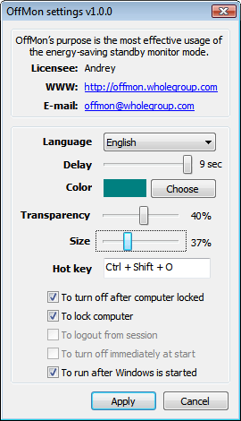

OffMon’s purpose is the most effective usage of the energy-saving standby monitor mode. With the help of this software monitor will be turned off(switched off) immediately as it may be required without waiting for long-lasting time delays of the system. Effective usage of monitor standby mode will allow you to reduce electricity costs, to reduce monitor thermal radiation, and to make a contribution to protection of the environment.
Using OffMon software that turns off monitor you get:
Convenience and effectiveness of monitor standby mode
Immediate monitor turn off(switch off) after computer locking
Computer locking after monitor turns off
Electricity cost reduction
Compatibility with main Windows versions (2000/XP/2003/Vista/2008/Seven, including x64)
Demo of OffMon software for monitor turning off(switching off):
Reduce the electricity cost!
By default, monitor automatically turns off(switches off) in 20 minutes since the last activity (after Windows operation system being installed). Certainly it is possible to reduce this period of time, but with little meanings being set constantly turning off(switching off) monitor will only destruct from work. OffMon software can turns off(switch off) monitor immediately after computer locking performed by a leaving his working place employee, which actually forms a part of security policies in many companies.
The table below helps you to calculate the amount of money saved thanks to OffMon software. This calculation is for a typical 50W monitor, 251 business days in a year.
Total time of monitor being inactive within 1 business day (min)
Number of employees
The OffMon setting for turning off monitor
To change OffMon software settings you are to click on the software icon situated in right down corner of workplace (Windows tray). In a popup menu choose “Settings”.

Settings windows is divided in two parts.
The upper part displays reference information: license owner, software official site, developer’s e-mail.
The lower part of settings window allows you to change language, to set turning off(switching off) period delay, to choose timer’s color, to choose the most suitable timer’s transparency (0% - absolutely opaque), to set size of a timer with relation to a monitor screen (50% - timer is of half desktop size), to set hotkey for monitor turning off(switching off).
To turn off after computer locking - monitor automatically turns off(switches off) when computer is locked (by default).
To lock computer - computer automatically locks when monitor is turned off(switched off) with the help of OffMon software.
To logout from session - after OffMonturns off(switches off) monitor with the help of OffMon, it logs off the system.
To turn off immediately at start - OffMon software does not require RAM in this mode. Monitor immediately turns off(switches off) when the program is started. After that program finishes its’ work it releases RAM. Function of monitor turning off(switching off) after computer locking is not available in this mode, and software would not react on a hotkey pressed.
To run after Windows is started - OffMon software downloads automatically every time the Windows operation system is started (by default).